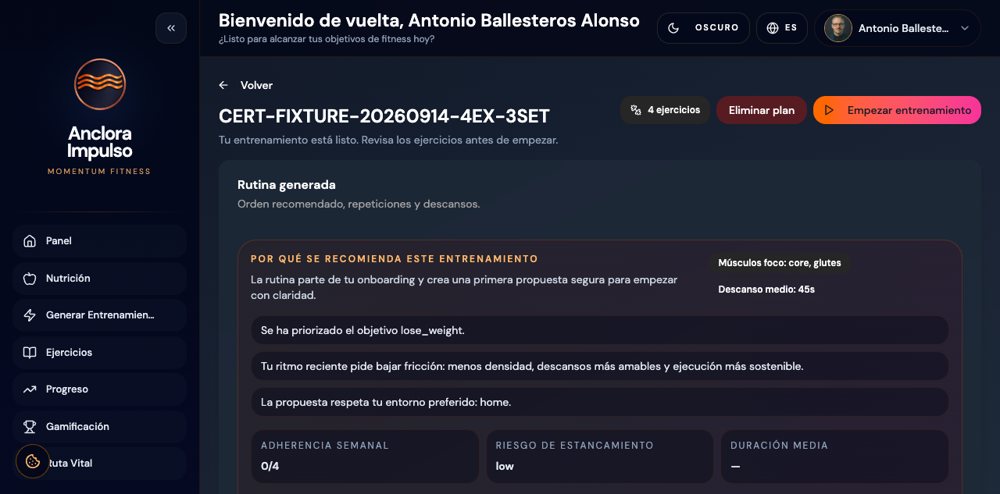
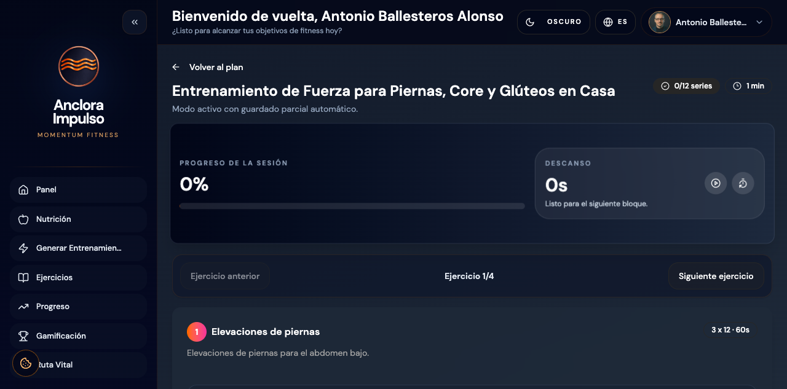
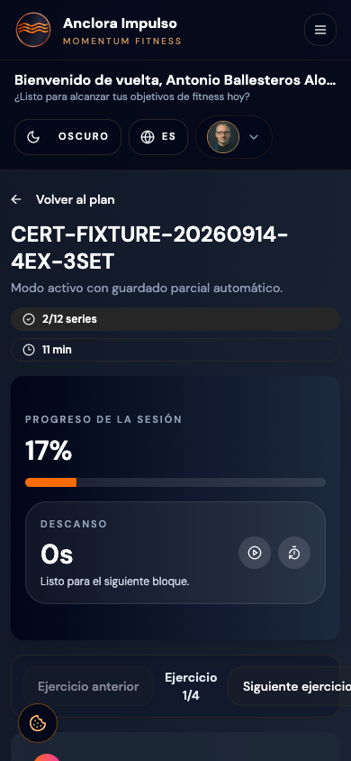
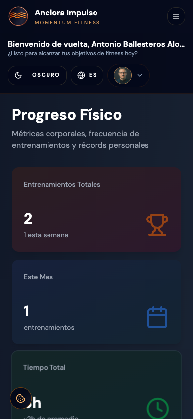
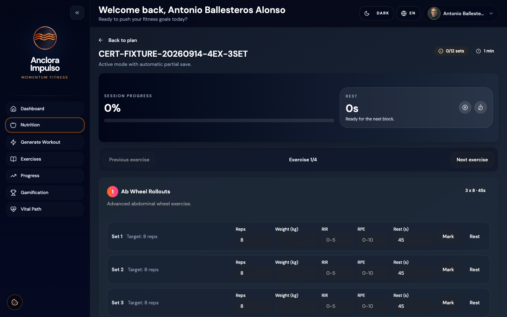
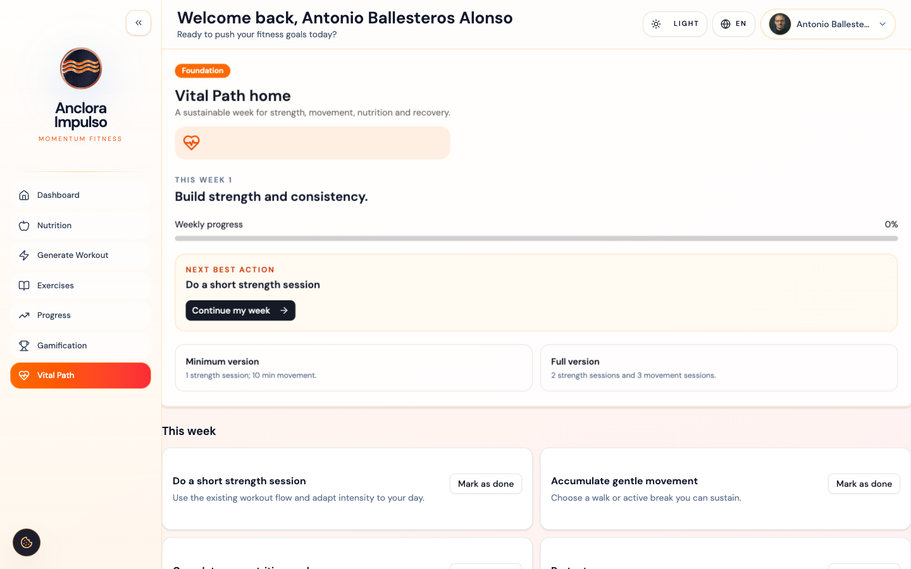

PASS_WITH_JUSTIFIED_EXTERNAL_GAPS
| Gate | Result | Evidence |
|---|---|---|
| Fixture | PASS | 4 synthetic exercises × 3 sets; account-scoped; no public test endpoint. |
| Auth/API/CORS | PASS | Production login and critical calls 200/201; OPTIONS 204. |
| Workout | PASS | Review → start → 12 sets → rest → exit/resume → complete → Progress. |
| Accessibility | PASS with tool gaps | Contextual AX names for exercise/set/field; no critical/serious violations. |
| Responsive | PASS | Seven required viewports represented; no horizontal overflow. |
| Findings | 0 Critical / 0 High | UX-01 is Medium; UX-03 resolved. |
The synthetic fixture was created through the authenticated API, used only by the authorized test account, and never exposed publicly. Browser evidence covered current exercise/set state, completed-set transitions, rest timer, previous/next semantics, synthetic notes, safe exit, resume persistence and completion.




| ID | Current result | Severity | Release |
|---|---|---|---|
| UX-01 | Focused current exercise, explicit next/previous, visible progress; three-set vertical scroll remains. | MEDIUM | Non-blocking |
| UX-02 | Mobile shell remains hamburger-first; workout controls themselves remain reachable. | MEDIUM | Non-blocking |
| UX-03 | AX tree distinguishes exercise, set and field type for reps, weight, RIR, RPE and rest. | RESOLVED / LOW | Closed |
The final deployed DOM exposes “Expandir sidebar”, a named account trigger, contextual set buttons and labelled session progress. Keyboard traversal reached shell links with visible focus; set controls are reachable after scroll. Axe returned zero critical/serious violations on the loaded workout page. The remaining contrast result is incomplete because the tool cannot resolve the gradient background; the remaining region warning is moderate best-practice. No exit modal was surfaced, so no modal behavior was invented.

| Surface | 1920×1080 | 1440×900 | 1366×768 | 1024×768 | 768×1024 | 430×932 | 390×844 |
|---|---|---|---|---|---|---|---|
| Workout execution | PASS | PASS | PASS | PASS | PASS | PASS | PASS |
| Dashboard | — | PASS | — | — | PASS | PASS | PASS |
| Health Plans | — | PASS | — | — | PASS | PASS | PASS |
| Progress / Nutrition / Exercises | — | PASS | — | — | — | PASS | PASS |
| Auth | — | PASS reusable | — | — | — | PASS reusable | PASS reusable |
All measured pages kept document width equal to viewport width. Workout vertical content is intentionally long at 390×844; the remaining opportunity is scroll reduction, not overflow.
Production enrollment returned 201; onboarding returned 200; the home exposed Foundation/current week, Full Version, Minimum Version and one dominant next action. Existing Workout, Progress, Nutrition and Gamification routes returned 200 from the authenticated shell. Light/dark and ES/EN were observed on private Ruta Vital/workout surfaces; document language switched to es and en. Safety copy remained educational and non-clinical.

| ID | Current | Severity | Blocking |
|---|---|---|---|
| UX-01 | PARTIALLY_RESOLVED | MEDIUM | NO |
| UX-02 | STILL_PRESENT | MEDIUM | NO |
| UX-03 | RESOLVED | LOW | NO |
| UX-04, UX-05, UX-06, UX-07, UX-08 | STILL_PRESENT / PARTIAL / REFINED | MEDIUM | NO |
| UX-09 | RESOLVED_READONLY | LOW | NO |
| UX-10, UX-11 | STILL_PRESENT | LOW | NO |
Vercel initially held the prior production target; the staged e398bff deployment was explicitly promoted and became READY/PROMOTED. Render’s historical /api/health/* remains a legacy dead endpoint not called by production traffic. A later login retry hit Render rate limiting (429); cleanup was deferred rather than attempting an unsafe or unauthenticated delete. The fixture remains account-scoped and clearly named pending maintenance cleanup.
Compared with the previous FAIL, the release is better. The requested safe workout evidence now exists, the real production workout completes, UX-03 is resolved from the AX tree, responsive workout coverage is complete, and no Critical/High finding remains. The highest-return follow-up is reducing mobile workout scroll while preserving contextual names, progress visibility and draft recovery.